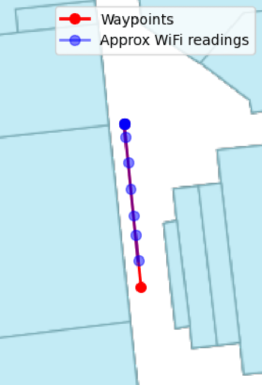

Data Augmentation Methods for Indoor Localization using RSSI Fingerprinting

Abstract
In this paper, we explore indoor localization data.
We analyze the data in-depth, and we ascertain an imbalance
between ground truths and labeled sensory data. We propose
three data augmentation methods specific to WiFi-based RSSI
fingerprinting that attempt to remedy the imbalance. Through
our experiments, using established machine learning algorithms,
we show that in most cases, the augmentation methods decrease
the mean position error. Our experiments also document to what
degree the machine learning algorithms used in this study are
affected by the data’s shortcomings. In the case of augmentation,
our methods decrease the mean position error by -6.92 - 59%,
with a mean of 25.97%. We also propose a postprocessing
technique that utilizes metainformation about the data to improve
predictions. We apply this technique to our best-performing
models’ predictions, as well as our worst-performing model’s
predictions for reference. The postprocessing technique decreases
the mean position error by 0.24 - 18.23%, with a mean of 6.81%.
My Contributions
The project was a collaboration between 5 people, therefore, I have decided to outline some features I worked on. I developed the methods used for approximation utilised in the paper. I was in charge of conducting many of the experiments and creating a testbed with multiple models to test our hypothesis. In part of performing our test I built the LSTM, NN and LGBM models used in the results of the paper.